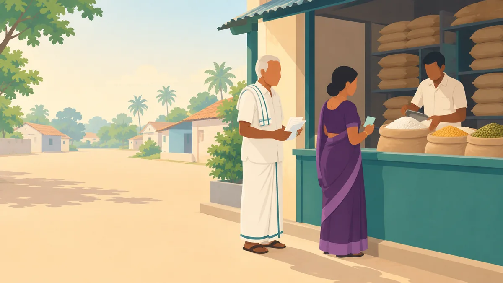
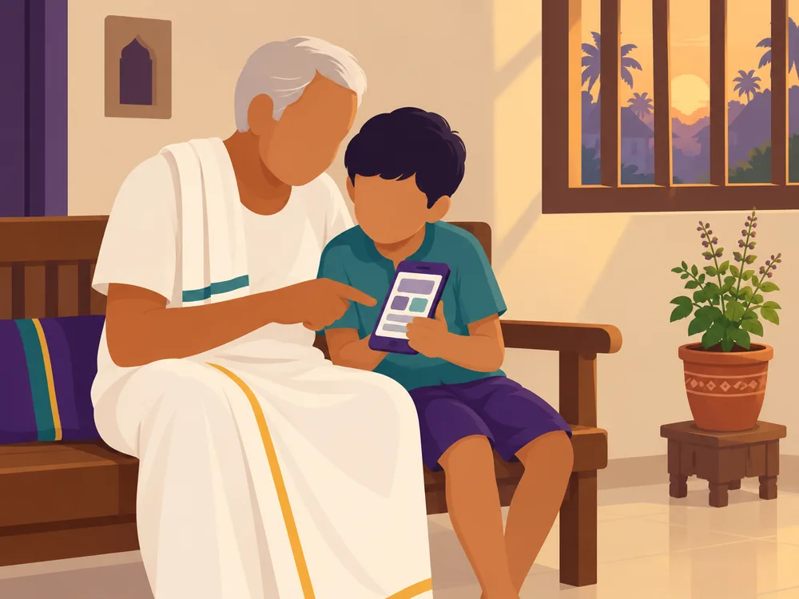

Language & theme
Language of the site
Appearance theme
Turn complex government PDFs into simple explanations.
Ask questions in Tamil, Hindi or English.
Explore answers supported by official documents and references.
Your language. Your rights. Your access.
Tap the orb to speak
Tap the orb and ask your question
TRY ASKING
RUMOUR SHIELD
Paste the message. Pakkam checks every claim against the official government documents and points out scam signs.
PUBLIC INFORMATION DIRECTORY
Search available scheme information and review eligibility details.

PREFERENCES & ACCESSIBILITY
Bigger text and buttons, slower voice, and a simpler home page.
Pakkam does not store your questions or voice on the server. Your history below stays only in this browser.

THE STORY BEHIND PAKKAM
The rules are in long official papers that are hard to find and harder to read.
Ask in your own language, by voice or by typing.
The answer points to the exact line on the official page.
01 · The conversation
We often think of technology as something that makes life easier. Faster payments, instant information, services at our fingertips.
But one day, I realised that not everyone experiences technology that way.
I love my grandparents. During one of our conversations, my grandfather spoke about something that had been troubling him. Accessing government services wasn’t easy. Understanding government messages was a struggle, and navigating mobile applications and government portals felt like an entirely different world.
The information existed. The services existed. But accessing them was another challenge altogether.
And that conversation stayed with me.
02 · The question
A friend and I talked it through, and it came down to a simple question:
Why should someone struggle to understand a government document when technology could simply explain it to them?
What if an elderly person could ask a question in Tamil and receive an answer in Tamil, with the page of the official document shown right there?
What if accessing information didn’t require knowing how to navigate complicated websites or understand official language?
03 · How Pakkam was born
We didn’t want to build another portal that people had to learn how to use.
We wanted to build something people could simply talk to.
That’s how Pakkam was born.
I began building an assistant that reads official scheme documents and answers questions in people’s own languages: Tamil, Hindi and English, with Tamil-English mixed typing too.
An assistant that doesn’t just give an answer, but shows where that answer came from.
And most importantly, one that knows when the documents don’t contain an answer, and says so rather than pretending to know.
We started with the schemes we could check against official documents. There is more to cover, and we say so openly.
04 · The name
பக்கம் — Pakkam. A page in Tamil.
The name comes from the simplest part of our original idea.
A government document is made of pages. Each page contains information that could affect someone’s life, but understanding it shouldn’t require specialist knowledge.
We wanted to make every page easier to understand.
05 · What it is for
Pakkam is about reducing the distance between people and the information they need: between a government scheme and the person who could benefit from it.
Because technology should adapt to people, not the other way around.
Pakkam பக்கம்
Your language. Your schemes. Your access.
One page at a time.
WHAT IT DOES
Tamil, Tanglish, Hindi or English, by voice or text, and answers out loud.
Every answer opens the page of the official document, with the line highlighted.
If the documents do not say it, Pakkam tells you instead of guessing.
Finds false claims and scam signs like fake links and OTP requests.
Documents to carry, and a draft appeal note if an application was rejected.
Scheme helplines, and a way to send your question to an officer.
UNDER THE HOOD
Gnani Prisma turns your voice into text, even mixed Tamil and English.
Gnani PrismaIt searches 18 official government documents, never the open internet.
18 official documentsEvery sentence must point to a page and every number must be on it. Then Gnani Timbre reads the answer aloud.
Gnani TimbreMEASURED ON THE LIVE SITE
THE PEOPLE BEHIND PAKKAM
Built for the Gnani.ai Great Indian AI Internship Challenge 2026, with Gnani Prisma and Timbre for voice. A student project, not a government service.